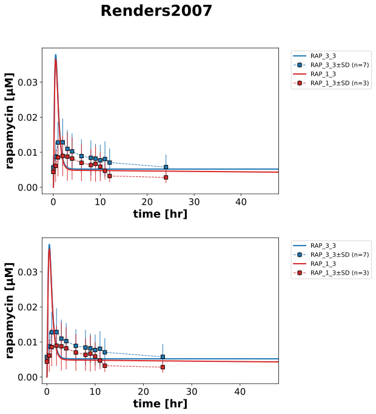

|  |
../../../../experiments/studies/renders2007.py
from typing import Dict
from sbmlsim.data import DataSet, load_pkdb_dataframe
from sbmlsim.fit import FitMapping, FitData
from pkdb_models.models.rapamycin.experiments.base_experiment import (
RapamycinSimulationExperiment,
)
from pkdb_models.models.rapamycin.experiments.metadata import (
RapamycinMappingMetaData,
Tissue, Route, Dosing, ApplicationForm, Health, Fasting, Coadministration
)
from sbmlsim.plot import Axis, Figure
from sbmlsim.simulation import Timecourse, TimecourseSim
from pkdb_models.models.rapamycin.helpers import run_experiments
class Renders2007(RapamycinSimulationExperiment):
"""Simulation experiment of Renders2007."""
#FIXME: doesn't read the cyp3a5, I added this in liver and intestine model
interventions = ["RAP_3_3", "RAP_1_3"]
colors = {
"RAP_3_3": "tab:blue",
"RAP_1_3":"tab:red",
}
f_cyp3a5 = {
"RAP_3_3": 0, #no activity
"RAP_1_3": 0.5 #half of nominal activity
}
def datasets(self) -> Dict[str, DataSet]:
dsets = {}
for fig_id in ["Fig4"]:
df = load_pkdb_dataframe(f"{self.sid}_{fig_id}", data_path=self.data_path)
for label, df_label in df.groupby("label"):
if not label.startswith("rapamycin_"):
continue
dset = DataSet.from_df(df_label, self.ureg)
dset.unit_conversion("mean", 1 / self.Mr.rap)
dsets[label] = dset
#console.print(dsets.keys())
return dsets
def simulations(self) -> Dict[str, TimecourseSim]:
Q_ = self.Q_
tcsims = {}
for intervention in self.interventions:
tcsims[f"rap_{intervention}"] = TimecourseSim(
[Timecourse(
start=0,
end=48 * 60, # [min] 48h
steps=2000,
changes={
**self.default_changes(),
"BW": Q_(70, "kg"), #FIXME: no bodyweight in article
"PODOSE_rap": Q_(2.9, "mg"),
# CYP3A4 activity (inhibition by diltiazem)
"GU__f_cyp3a5": self.f_cyp3a5[intervention],
"LI__f_cyp3a5": self.f_cyp3a5[intervention],
},
)]
)
#console.print(tcsims.keys())
return tcsims
def fit_mappings(self) -> Dict[str, FitMapping]:
mappings = {}
for intervention in self.interventions:
mappings[f"fm_rap_{intervention}"] = FitMapping(
self,
reference=FitData(
self,
dataset=f"rapamycin_{intervention}",
xid="time",
yid="mean",
yid_sd="mean_sd",
count="count",
),
observable=FitData(
self, task=f"task_rap_{intervention}", xid="time", yid="[Cve_rap]",
),
metadata=RapamycinMappingMetaData(
tissue=Tissue.PLASMA,
route=Route.PO,
application_form=ApplicationForm.NR,
dosing=Dosing.SINGLE,
health=Health.RENAL_TRANSPLANT,
fasting=Fasting.NR,
coadministration=Coadministration.NONE
)
)
return mappings
def figures(self) -> Dict[str, Figure]:
fig = Figure(
experiment=self,
sid="Fig4",
name=f"{self.__class__.__name__}",
num_rows=2,
)
plots = fig.create_plots(
xaxis=Axis(self.label_time, unit=self.unit_time, max=48),
legend=True
)
for k in range(2):
plots[k].set_yaxis(self.label_rap, unit=self.unit_rap)
plots[1].xaxis.min = -1
plots[1].xaxis.max = 48
for intervention in self.interventions:
for k in range(2):
# simulation
plots[k].add_data(
task=f"task_rap_{intervention}",
xid="time",
yid="[Cve_rap]",
label=intervention,
color=self.colors[intervention],
)
# data
plots[k].add_data(
dataset=f"rapamycin_{intervention}",
xid="time",
yid="mean",
yid_sd="mean_sd",
count="count",
label=intervention,
color=self.colors[intervention],
)
return {fig.sid: fig}
if __name__ == "__main__":
run_experiments(Renders2007, output_dir=Renders2007.__name__)
{kind=link}